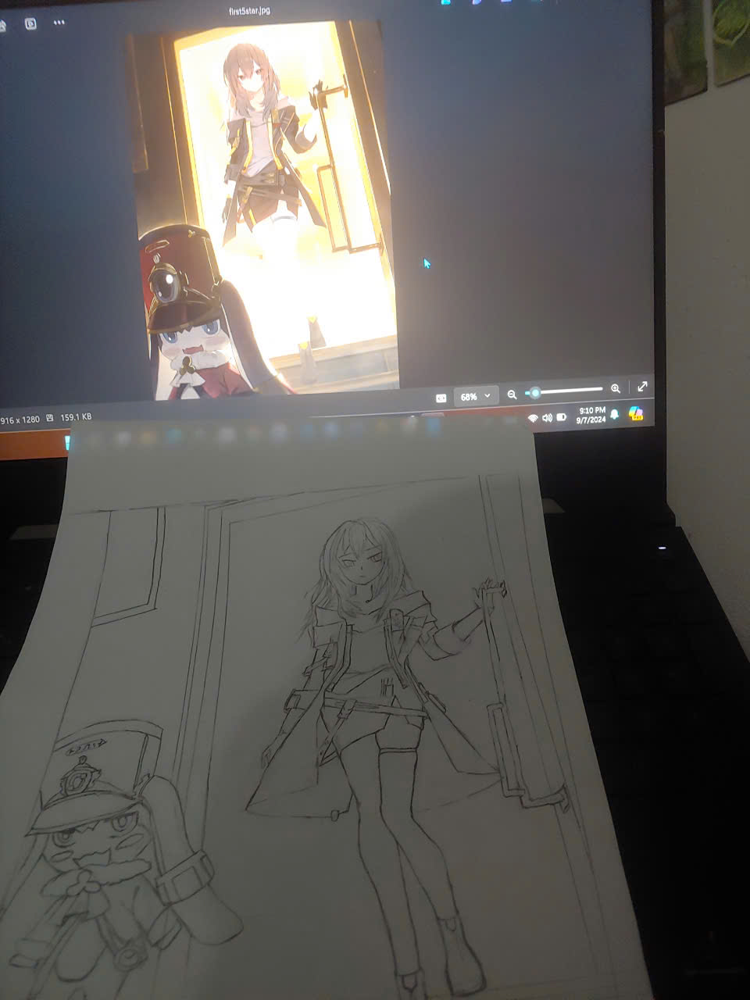
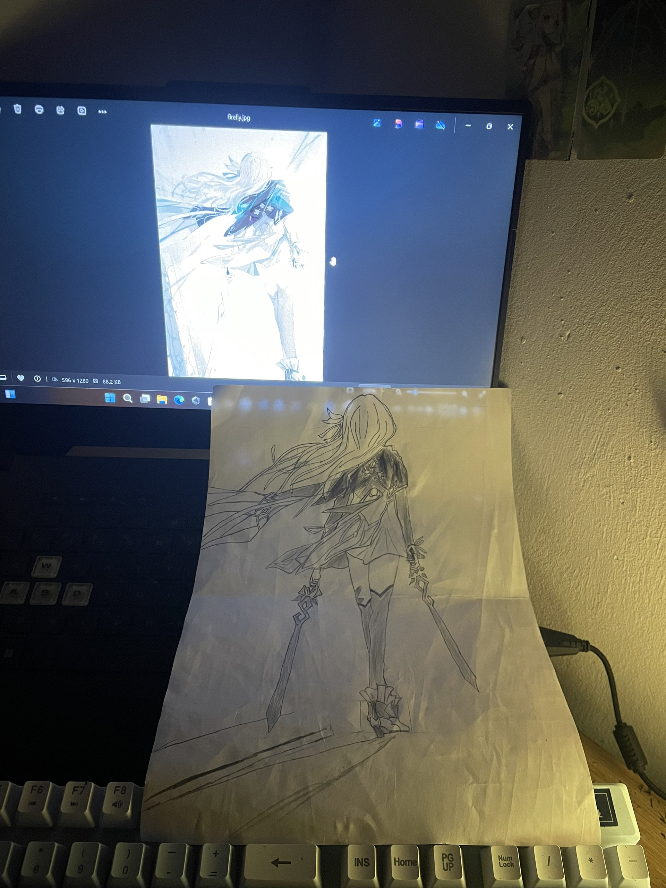
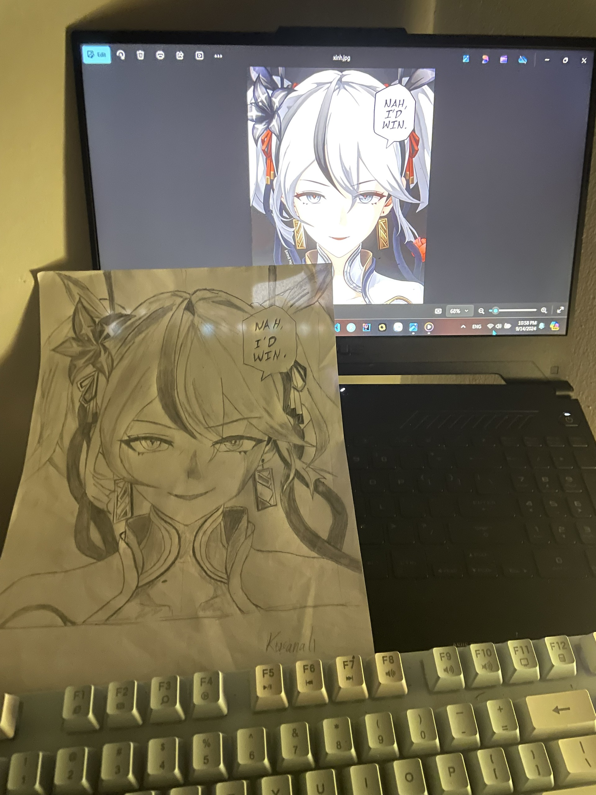
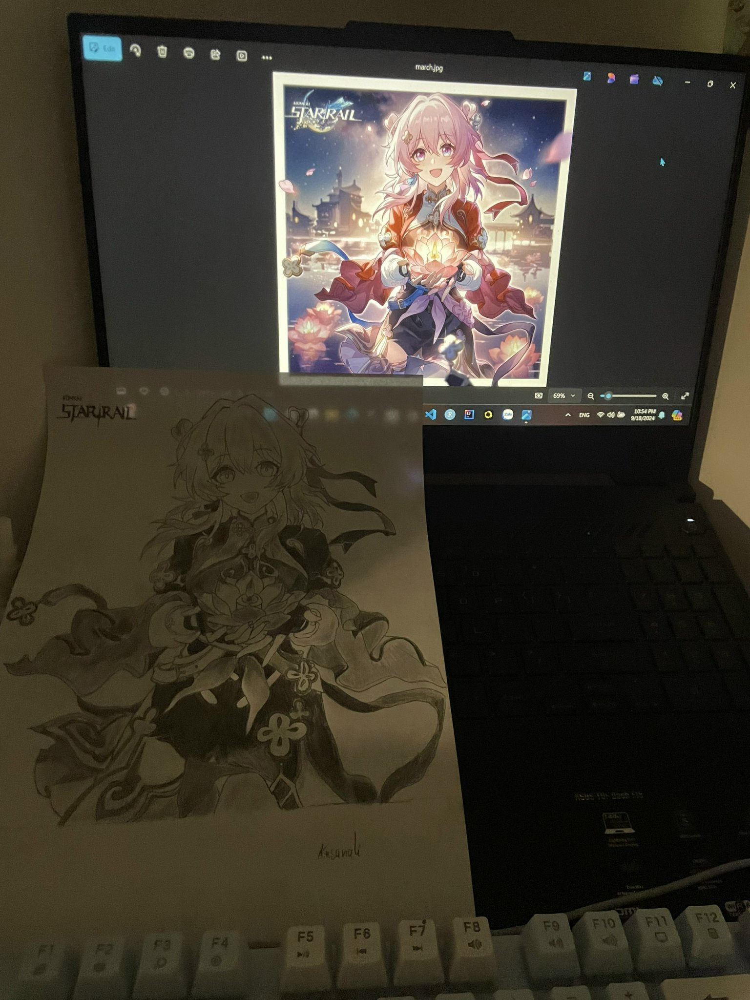

Dun's another hobby that not many people know about it
Drawing was one of Dun's childhood hobby but as he grew older, he gradually lost interest in it. However, during a rough path in the second semester of his first year in uni, he found himself picking it up again - as a way to heal him.
He's doing much better now and has gotten pretty busy, so he hasn't drawn anything new lately. That said, let's take a look at what he created back then.
The first drawing he made during that time was of Stelle, main character from Honkain : Star Rail. Dun had only just returned to the game around then - he originally played during the pre - register period but ended up uninstalling it not long after.

This drawing might not look very polished, mainly because he didn't use any guidelines - no frames, no grids, no measuring for proportions or height and width. He simply sketched it all in one from start to finish. Anyways, Dun felt quite satisfied with the result at the time.
The second drawing Dun made was of Firefly, another character from Honkai: Star Rail. At the time, she was one of the most beloved characters in the game. Dun thought she was really cute too - but just to be clear, he didn't simp for her.

Just like the Stelle drawing, this one isn't very polished either - but for Dun, that was perfectly fine. He especially liked the twin blades Firefly was holding in the original image.
Next up is a character from Wuthering Waves - the charming Camellya. In fact, what Dun was drawing here was actually a meme of her. As you can see, there's the phrase 'Nah, I'd win' in the top right corner.

He doesn't play Wuthering Waves, but the reason he drew this was simply because it's a funny meme.
Next, we have March 7th from Honkai: Star Rail, dressed in an outfit for some kind of Chinese festival - I'm not sure what it's called, but it seems to share the same meaning as the Mid - Autumn Festival in Vietnam.

A fun little fact - he actually drew this picture right on the Mid - Autumn Festival itself! But since it was a drawing with a lot of details, it took him quite a long time to finish. In fact, by 9 PM that day, he still wasn't done and needed more than 30 extra minutes to complete it 😓
To be continued...